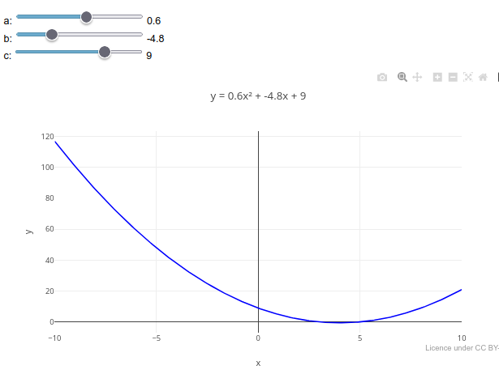

1. Choose a topic;
2. Click on the corresponding graph;
3. Click on "Add Plot";
4. Use the mouse for interactivity and/or edit the code.
Reminder: the editor uses infinite undo/redo in the code (Ctrl+Z / Shift+Ctrl+Z)!JSPlotly at School
To illustrate the potential use of JSPlotly for elementary and high school education, here are some examples of simulations and graphs that are often found in textbooks and related content. To get the most out of each topic, try following the suggestions for parametric manipulation in each topic.
Instructions
1 Mathematics
1.1 Trigonometry (EM13MAT306, EM13MAT308, EM13MAT307)
The following simulation aims to facilitate the visualization of some concepts in trigonometry, sine, cosine, and tangent. The code allows you to use a drop-down menu for each trigonometric function, as well as a slider to change the frequency in radians.
Equation:
1. Sine function:
\[ y = \sin(\omega x) \]
2. Cosine function:
\[ y = \cos(\omega x) \]
3. Tangent function:
\[
y = \tan(\omega x)
\]

Suggestion:
1. Select the sine, cosine, and tangent functions alternately using the "drop-down menu";
2. Try changing the frequency of the function using the slider;
3. Overlay a sine graph and a cosine graph to observe their differences;
4. Repeat the same for the tangent graph.
Suggestion:
1. Drag the end markers of the graph to view a more restricted limit;
2. Click on the buttons with different periods;
2. You can change the random noise around the mathematical equation that defines the fluctuation above by simply modifying the line of code in: "const values = days.map((_, i) => 50 + 10 * Math.sin(i / 10) + Math.random() * 50);" - change ‘50’ to "5".
1.3 Simulated animation for a function (EF07MA20, EF09MA20, EM13MAT302, EM13MAT304)
With the application, it is possible to simulate a frame-by-frame animation to improve learning of a topic by inserting a manual slider. The following example shows a simulator for manual animation for mathematical functions. To use it, simply slide the slider progressively to see a graphical representation of the result as the predictor variable changes.
Note: This educational object has a trick…actually, two! After clicking add, you must first slide the slider to view the graph. And to view an animation for another equation, you must refresh the page, as instructed at the bottom of the graphic screen.

Suggestion:
1. Slide the control to highlight the manual animation;
2. Try replacing the model equation with another one, and drag the slider to observe the effect;
3. Change some parameters for the animation, for example, increasing the "frames" levels (slider.max = "50"; slider.value = 1);
4. Reload the page and change the mathematical function; e.g., "let f = x => Math.sin(x);"
1.4 Simulated animation with multiple sliders
Simpler and more immediate than code changes, sliders can contribute more immediately to the understanding of a problem, as follows for the example of the parameters of a parabola.
{target= “_blank”}
1. Drag any slider and observe the trend presented, as well as the change in the equation parameters at the top;
2. As in the previous example, it is possible to change the mathematical function in the code, as well as the parameters for a new slider. Test this by changing the function " y_values = x_values.map(x => a * x * x + b * x + c);
" to " y_values = x_values.map(x => Math.sin(a * x * x + b * x + c));"1.5 Fractal composition (EM13MAT301, EM13MAT305, EM13MAT401, EM13ARM502, EF09MA10)
Fractals are geometric objects with scale symmetry, forming patterns that repeat in smaller parts of the original object. The most common mathematical representations are Mandelbrot fractals and Julia fractals, which combine art and mathematics in geometric figures with fractional dimensions that express the degree of complexity and space occupation. Originally conceived at IBM in the 1980s, fractals are now seen everywhere from the cartographic outline of certain regions to the distribution of living cells in culture.
Equation
Julia fractals are formed in a complex Cartesian plane by the sum of the real and imaginary components. The basic formula for the Julia set is given by:
\[ z_{n+1}=z_{n}^{2}+c \]
Where:
z ∈ C: usually initialized as the point on the complex plane;
c ∈ C: fixed for each Julia set.

Suggestion
1. Try changing the Real and Imaginary components of the formula to obtain different artistic patterns. Here are some suggestions:
c = 0 + 0i
c = -0.4 + 0.6i
c = 0.285 + 0i
c = -0.8 + 0.156i
c = 0.45 + 0.1428i
1.6 Mandelbrot Fractal
Another interesting structure involves Mandelbrot fractals, represented by a different set of equations. The following example adds this fractal with a selection menu.

Suggestion
1. Select different colors and magnification levels ("zoom") in the two menus for different views;
2. Check where the equations that define the Mandelbrot profile are located in the code, and make small changes to check different results.
2 Financial Mathematics
2.1 Compound Interest (EM13MAT402):
Also known by the maxim “interest on interest,” compound interest adds value to capital over time, resulting in growth of the final amount.
Equation:
\[ M = C \cdot (1 + i)^t \]
Where,
- M: final amount
- C: initial capital
- i: interest rate per period (in decimal)
- t: number of periods (e.g., months)

Suggestion:
1. Vary the contract period, monthly interest rate, or initial amount.
2. Try combining the parameters in the variation.
3. Evaluate the visual difference between an investment and a loan, entering a positive initial capital value for the former and a negative value for the latter.
4. Observe the downward curve for a simulated loan with negative initial capital. The remaining values refer to the outstanding debt to pay off the loan.
3 Statistics
3.1 Normal distribution curve (EM13MAT316, EM13MAT407, EM13MAT312)
Sampling and population are common topics for data observation in analytical procedures. The statistical distribution curves for this involve the t-Student, F-Snedecor, Chi-square, and normal distribution. The normal distribution curve reflects the statistical behavior for natural phenomena in a given data population.
The example aims to illustrate the use of the z-transformation, the calculation of critical values, and the interpretation of the area under the curve in the study of normal distribution and statistical inference.
Equation
The density function of the normal (or Gaussian) distribution is given below?
\[ f(x) = \frac{1}{\sigma \sqrt{2\pi}} \, e^{ -\frac{(x - \mu)^2}{2\sigma^2} } \]
Where:
- \(\mu\) = 0 (mean of the distribution);
- \(\sigma\) = 1 (standard deviation);
- x = continuous random variable; f = density function of the normal distribution
From the above equation, we can extract z, the value of the standardized random variable for zero mean and unit standard deviation, representing the value on the x-axis:
\[ z = \frac{x - \mu}{\sigma} \]

Suggestion:
1. Try changing the value of "p" and run the graph. This value represents the probability of observing, under the null hypothesis, a value as extreme or more extreme than the observed value — that is, it measures the evidence against the null hypothesis. In the graph, it represents the area under the normal curve in the critical regions, indicating the chance of the observed result occurring by pure chance.
3.2 Animation of a histogram (EF09MA21, EM13MAT406, EM13MAT407)
Statistical information is sometimes represented graphically, such as the distribution of values in box-and-whisker plots or histograms. The example below illustrates the potential for understanding a histogram added to an animation feature.
Suggestion:
1. Note the various constants at the top of the script that can be changed for a different animation, and try changing them one by one to understand both the action of the object and the statistical content to which it refers:
const mu = 0 (mean);
const sigma = 1 (standard deviation);
const n_frames = 50 (no. of frames);
const sample_per_frame = 20 (sample rate/frame);
4 Computer Science
4.1 JavaScript Training (EF09LP27, EF06MA20, EM13MAT503, EM13LGG701)
With a special focus on computational thinking and programming logic, the following example illustrates a metalanguage for * JSPlotly*, which is an application in a specific programming language that produces a script for learning the language itself.

Suggestion:
1. Here, the sky's the limit! There are countless possibilities for commands and functions in JavaScript, as well as for joint output of data, calculations, and graphs.
## Physics
### Pitch, harmony, and timbre of sounds (EF15AR06, EM13ARH402)
| The following example illustrates the concepts of pitch (frequency), harmony, and timbre (pure waves and harmonics) for a graph of musical tones (diatonic scale). {target=“_blank”}
{target=“_blank”}
Suggestion:
1. Test other tones (C, G, D, etc.), observing how the pure wave appears by superimposing the graphs;
2. Evaluate the difference between a pure wave and one produced with musical instruments, involving natural harmonics. To do this, replace the Boolean option from "false" to ‘true’ in the variable "const ondaComposta".
4.2 Elastic potential energy (EM13CNT102, EM13CNT202, EM13MAT402)
The deformation of an elastic material is directly proportional to the force exerted on it and limited to the properties of the material.
Equation
The behavior of an ideal spring is described by Hooke’s Law below:
\[ F = -k*x \]
Where:
- F = restoring force of the spring (N);
- k = elastic constant of the spring (N/m);
- x = deformation (m).
On the other hand, the elastic potential energy involved is described by the following quadratic relationship:
\[ E = \frac{1}{2}*k*x^2 \]
Where:
- E = elastic potential energy (J).

Suggestion:
1. Try changing the value of the spring's elastic constant to highlight its effect, relating it to stiffer or less stiff springs;
2. Change the spring deformation limits in the code's "control structure" (e.g., "for (let x = -0.7)"), and observe the effect on the maximum potential energy;
3. Note that, due to the quadratic operation on the deformation value, the potential energy is always positive.
4.3 Motion of bodies (EM13CNT102):
The following code illustrates the trajectory of an oblique launch with an angle adjustable by a slider, useful for exploring the concepts of kinematics.
Equation:
1. General equation
\[ y(x) = x \cdot \tan(\theta) - \frac{g}{2 v_0^2 \cos^2(\theta)} \cdot x^2 \]
Where:
- y(x): height as a function of horizontal distance;
- x: horizontal position (m);
- \(\theta\): angle of launch relative to the horizontal (radians or degrees);
- v0: initial velocity of the projectile (m/s);
- g: acceleration due to gravity (9.8 m/s²\(^{2}\))
2. Total flight time:
\[ t_{\text{total}} = \frac{2 v_0 \sin(\theta)} {g} \]
3. Horizontal position over time
\[ x(t) = v_0 \cos(\theta) \cdot t \]

Suggestion:
1. Note that there is a slider bar for initial angles in the simulation. Drag the bar to another angle and add the graph, comparing the effect of this modification.
2. Change the initial velocity in the code and observe the effect on the graph.
3. Simulate a " lunar condition" for the trajectory, whose gravity is around 1/6 that of Earth (~1.6 m/s²).
4.4 Animation for oblique launch (EF09CI09, EF09MA20, EM13CNT103, EM13MAT304)
Like simulations, animations can aid in understanding a specific topic (simulation- or animation-based learning). JSPlotly can work directly with animations using the Plotly.js library (insertion of frames, buttons, transitions, for example).
Below is an animation for the parabolic launch of a projectile, described by the equations in the previous topic. Unlike that one, however, the insertion of an animation adds value to the understanding of the phenomenon by offering the possibility of parametric manipulation of the code associated with the animation itself.
Suggestion:
1. As in the previous topic, try changing the parameters of the equation, such as the initial velocity and the angle of attack, and observe the effect of these changes.
4.5 Animation for translational motion in the solar system - approximate data (EF05CI08, EF07CI01, EM13CNT104, EM13CNT103)
Dynamic representations of complex phenomena can aid in understanding them, regardless of the field of knowledge. In addition, simulations with approximate data from reality can also insert another image into the learner’s cognitive perception. The example below illustrates an animation for the translational motion of the planets in our solar system based on approximate data.

Suggestion:
1. Note that there is a slider bar at the top of the object; drag it to observe different speeds for the animation;
2. Note that the image was made possible by "zoom" on the graphic screen, to improve the visualization of the planets. In this sense, try using this feature during the animation;
2. Note that there are 8 planets in the animation, not including the dwarf planet Pluto. This is not because it has been overlooked, but because you can observe how slow the planets move as they distance themselves from the Sun (see Neptune, which is practically static). In this sense, we can see the potential of an animation with approximate data, providing additional information that is not noticeable in textbooks on the subject.
4.6 Animation for simple harmonic motion (EF09CI09, EF09MA18, EM13CNT104, EM13CNT203)
Among various situations for analyzing the physical properties of materials and systems, the linear relationship between applied mass and spring deformation is of significant importance. The equation representing the position of the mass as a function of time is given below.
Equation
\[
x(t)=Acos(ωt+ϕ)
\]
Where:
- x(t) = The position of the mass at time t;
- A = amplitude of motion, which is the maximum distance of the mass from the equilibrium position (in this case, x=0);
- \(\omega\) = angular frequency, which defines the rate of oscillation. It is calculated by 2\(\pi\)/T, where T is the period (the time for a complete cycle);
- \(\phi\) = initial phase or phase constant, which defines the position of the mass at t=0

Suggestion:
1. Try changing some parameters of the equation of motion, such as amplitude A and angular frequency;
2. Increase the angular frequency of the animation by reducing the denominator in "const w";
2. Try the "html" button and note that the animation is preserved when exporting the file;
3. Try the "clone" button and note that it is possible to share the object in the frozen configuration along with the modified code
4.7 Animation for pendulum motion (EF09CI09, EF09MA18, EM13CNT104, EM13CNT203)
Similar to the previous object, here we have an animation for the mechanical phenomenon of periodic pendulum motion. The equations describing the position of a simple pendulum as a function of time, using the small oscillations approximation, are given below.
Equation
\[ θ(t)=θ_0cos(ωt) \]
\[ x(t)=Lsin(θ) \]
\[ y(t)=−Lcos(θ) \]
\[ ω=\sqrt{\frac{L}{g}} \]
Where:,
- θ(t) = angular position;
- x(t) = x coordinate;
- y(t) = y coordinate;
- ω = angular frequency

Suggestion:
1. As suggested for other objects, try "parametric exploration" of the equation involved in the code, changing its parameters;
2. Note an advantageous feature of simulations over real experiments: the realization of conditions that are impossible in practice. To do this, try the simulation as if you were on the Moon, changing the value of gravitational acceleration to 1.62 m/s^2 (but with ". ", not "," - because it is programming syntax.
5 Chemistry
5.1 Absorption bands as a function of concentration - 3D representation (EF09CI04, EF09MA17, EM13CNT103, EM13MAT305)

Suggestion
1. Try changing the graph pattern and colors. Respectively: type: ‘surface’, colorscale: ‘Viridis’);
2. Change the wavelength range, separating the peaks; to do this, change the min/max variables of lambda: const lambdaMin = 450, lambdaMax = 600;
5.2 Heat Capacity (EF09CI06, EM13CNT104, EM13CNT203)
The following simulation aims to observe the relationship between heat exchanged (Q), mass (m), heat capacity (c), and temperature variation (\(\Delta\)T).
Equation:
\[
Q = c \cdot m \cdot \Delta T
\]

Suggestion:
1. Try varying the temperature initially, superimposing some graphs;
2. Also vary the mass in the code editor for comparison.
5.3 Mixture of substances in an exothermic reaction - 3D graph (EF09CI02, EM13CNT103, EM13CNT103)
Simulations can be performed without necessarily involving a mathematical relationship, as in the experimental observation of two variables, such as time and concentration, simulating an exothermic chemical reaction. Here is an interactive 3D example.
In this case, the equation used in the editor involves a smooth variation of temperature over time, using the sine function and an initial temperature (see the code).

Suggestion:
1. Try varying the temperature initially, overlaying some graphs;
2. Also vary the mass in the code editor for comparison.
5.4 Animation and reaction kinetics
A topic that students find difficult to grasp is the abstraction required to uncover the mathematical relationships that arise in chemical reaction kinetics. When dealing with the conversion of reactants into products, for example, there is an inherent barrier to learning about reaction rates, inhibition, and activation. To reduce the impact of this abstraction, here is an example of an animation for reaction kinetics, in which the object changes depending on the reaction rate and modulator options.
Equation:
\[ R(t)=\frac {R_0}{1+k_{effective}t} \]
\[ P(t)=R_0−R(t) \]
Where,
- \(R(t)\) = amount of reactant R at time \(t\) (arbitrary units);
- \(P(t)\) = amount of product P at time \(t\) (arbitrary units);
- \(R_{0}\) = initial amount of reactant at time \(t=0\);
- \(t\) = time (in seconds);
- \(k_{\text{kinetic}}\) = base rate constant (in \(s^{-1}\));
- \(k_{\text{effective}}\) = effective constant after considering catalyst and/or inhibitor:
\[ k_{\text{effective}} \;=\; k_{\text{kinetic}} \times \begin{cases} f_{\text{cat}}, & \text{if catalyst is on}\\[6pt] 1, & \text{if catalyst is not bound} \end{cases} \times \begin{cases} \dfrac{1}{f_{\text{inhib}}}, & \text{if inhibitor is bound}\\[6pt] 1, & \text{if inhibitor is not bound} \end{cases} \]
Suggestion
1. Try changing the "k_cinetica" constant at the top of the code (e.g., 0.008, 0.017, 0.05) and use Play/Reset to compare;
2. Try adding/removing inhibitor and catalyst;
3. Try changing the potential of the modulators above by editing their constants:
a. const catalyzer_factor = 2.0;
b. const inhibition_factor = 3.0;
5.5 Interactive dashboard for environmental measurements - simulated data (EF07MA21, EF09MA21, EM13MAT406, EM13LGG604)
Currently, it is common to present data in a panel containing different interactive information or data that complement each other in graphs and tables, for example. These panels provide an overview of the topic addressed, as well as adjustments to the parameters contained therein. Below is an example of a panel with simulated data for conductivity and temperature measurements in an aqueous medium, with parameters adjustable by a slider (not very practical, in fact, but illustrative of the application’s potential).
Suggestion:
1. Although it is an object that only simulates data acquisition, you can obtain a different result by interfering with the code, such as:
a. Changing the sliders: "slider.min = "0";slider.max = "24"; slider.step = ‘1’ " ;
b. Changing the equations that define the behavior of the displays:
"const time = Array.from ({ length: 25 }, (_, i) => i); // 0 to 24h
const temperature = time.map(t => 20 + 5 * Math.sin((t - 6) / 3)); // peak 12h
const conductivity = time.map(t => 100 + 30 * Math.cos(t / 5)); "
6 Biology
6.1 Area of Brazilian biomes (EF05GE05, EF08GE08, EM13CNT301, EM13CNT304)
Suggestion
1. The data presented is for simulation purposes only. For more robust data, reliable sources are recommended (e.g., MapBiomas Brasil - https://brasil.mapbiomas.org/)
2. This is a bar chart, nothing more. If you change the information in the constants of the first three vectors ("const X = [...]"), you can convert the representation to a different theme.
6.2 Water cycle diagram (EF06CI03, EF06CI04, EM13CNT103, EM13CNT202)
The application also allows the creation of other interactive educational objects, without the need to insert equations, such as diagrams and flowcharts. Here are some examples.

Suggestion:
1. As with the diagrams above, try changing the properties of the arrows and the terms and fields involved in the flowchart in the code;
2. Replace terms to form another flowchart;
3. Reposition the objects in the graphic area (fields, terms, arrows) with the help of the mouse.
6.3 Diagram of the light and dark cycles of photosynthesis (EM13CNT101, EM13CNT103, EM13CNT201, EM13MAT405)

Suggestion
1. Try repositioning the inputs and outputs (e.g., Light, Glucose) by simply dragging them with the mouse;
2. Replace the terms within the boxes, or change other aspects of the diagram (color, fill, for example).
6.4 Population Growth Model with Lag Phase (EM13CNT102, EF06MA17, EF08CI06, EM13MAT301, EM13CNT201)
This model presents a logistic function that simulates population growth (e.g., microorganisms, cells), accompanied by a delay component. By varying the parameters in the editor, it is possible to estimate different population growth profiles.
Equation:
\[ N(t) = \frac{K}{1 + \left(\frac{K - N_0}{N_0}\right) \cdot e^{-r \cdot A(t) \cdot t}}, \quad \text{with } A(t) = \frac{1}{1 + e^{-k(t - t_0)}} \]
Where:
- K = environmental carrying capacity;
- N0 = initial population;
- r = intrinsic growth rate;
- A(t) = growth activation factor with delay (lag phase);
- t0 = midpoint of transition between lag phase and log phase;
- k = delay smoothing constant (set to 0.5 in the code)

Suggestion:
1. Try varying the parameters of the equation, combining some of them and comparing their effects on the graphs:
a. Carrying capacity;
b. Initial population;
c. Growth rate;
d. Delay (lag phase);
6.5 Energy efficiency and food chain (EF06CI02, EM13CNT202, EM13CNT203)
Here is an example to illustrate the transfer of energy between different trophic levels of a food chain. Although there is no mathematical function that describes it, the 10% rule of ecological efficiency between the levels of the chain, which results in a logarithmic transfer relationship.

Suggestion
1. Lindeman's rule, outlined in the reference above, establishes a variation of 5-20% energy efficiency in the ecosystem. So, try superimposing the curves with these rates;
2. If you want to observe the logarithmic relationship of energy transfer, add the command "type: ‘log’," just below "title: ‘Available energy (units)’,".
6.6 Animation for neuron action potential (EF08CI08, EF09CI01, EM13CNT202, EM13CNT302)
Some natural phenomena are observed over time, although their didactic representation in books and the like is offered in a static manner. In the following example, an animation for neuron potential facilitates learning about depolarization/hyperpolarization/repolarization events that accompany nerve transmission.
Suggestion:
1. Try changing the default values for the potentials presented in "function potential(i)" in the code;
2. Altered values are present in some neurological conditions, such as epilepsy and multiple sclerosis.
6.7 Animation of map of areas burned by biome in Brazil - fictitious data from 1955 to 2024 (EF07CI08, EF08GE08, EM13CHS101, EM13CNT201)
The use of maps in Natural Sciences and Human Sciences finds common ground for environmental and socio-economic problems, as illustrated by the following animation. In it, the area in square kilometers burned in each Brazilian biome is shown in the animation with the period and area next to the title of the interactive object, and with a time slider below.

1. It is advisable to seek more accurate sources of information on the topics covered, since GSPlotly, as an AI assistant, does not guarantee the nature of the information. In the example, we suggest the "Queimadas Program - INPE - Terrabrasilis" (https://terrabrasilis.dpi.inpe.br/queimadas/situacao-atual/situacao_atual/);
2. More accurate data can be entered in the script itself, in the field "const usar_dados_ficticios = true; // change to false and fill in areaBiomaAno_real()";
3. The theme of the animated map can be changed to any other by simply altering the data in the "General Control" constants of the script.
6.8 Conway’s Game of Life (EF06MA20, EF09MA24, EM13MAT503, EM13CNT201)
This object illustrates a version of a cellular automaton conceived in 1970 by J.H. Conway, which simulates biological events such as birth, growth, reproduction, and death through the iterative and partially chaotic distribution of pixels on a screen. The Game provides a mathematical and visual approach to simple rules applied to complex phenomena.
The Game allows for four distinct patterns (Glider, Blinker, Toad, Random), each distributing events of birth, survival, and death according to mathematical relationships. You can pause to observe details of the evolution.
Suggestion:
1. See at the top of the code that it is possible to change the grid size, time steps, and the probability of a cell being alive in "Random" mode.
7 Geography
7.1 Map of Brazil and Capitals (EM13CHS101, EM13CHS202, EM13CHS301)
JSPlotly is not just about equations! With the Plotly.js library that composes it, it is also possible to produce interactive maps, such as the one in the simulation below.

Suggestion:
1. Try using the mouse scroll wheel and the "pan" icon on the top bar to interact with the map.
7.2 World map and some large cities (EF06GE05, EF07GE06, EM13CHS101, EM13MAT502)

1. Try changing the script by inserting other cities with their respective geographic coordinates in "const data" (text, long - longitude, lat - latitude)
7.3 Map and GDP of the Middle East (EF09GE03, EF08GE06, EM13CHS104, EM13CHS201)

Suggestion:
1. Try using the mouse scroll wheel;
2. Click on a country to identify its name and approximate gross domestic product;
3. Modify the code to update some data or to change the information (e.g., replacing GDP with other data).
8 History
8.1 Distribution of enslaved people in the Americas from 1500 to 1888 (EF08HI06, EM13CHS104, EM13CHS503):
This simulation presents an interactive bar chart for selecting the period from a drop-down menu, and tangent to the estimated number of enslaved Africans landed in the main regions of the Americas. The data are rough estimates to illustrate the visualization potential of the application, while serving as a starting point for more accurate educational discussions. Sources that can be consulted include Slave Voyages.

Suggestion:
1. Try switching between periods in the drop-down menu, comparing slave trade estimates;
2. Select a period, create the graph, select another period, and add another graph. This allows you to compare the number of slaves brought in by the double bars formed, and hover your mouse over each bar.
8.2 Timeline of events in the Middle Ages (EM13CHS101, EM13CHS102)

Source: Encyclopedia.com
Suggestion:
1. Try changing events and periods in the code to refer to another period in human history.
8.3 Cartographic changes perceived over time (EF08GE09, EF07GE05, EM13CHS102, EM13CHS104)
It may be interesting to convey geographical and/or historical information over time in the representation of a map. Here is an example.
Suggestion:
1. You can change the map formatting in the code for colors ("lakecolor"), menu position ("updatemenus"), transition duration between frames (‘transition’), among others;
2. This example is generic; change the constants in "countries," "years," and "values," and get a new map for a specific theme.
8.4 Timeline of events in the Middle Ages (EM13CHS101, EM13CHS102)
Source: Encyclopedia.com
Suggestion:
1. Try changing the events and periods in the code to another period in human history.
9 Languages
9.1 Slang spoken in Brazil from 1980 to 2020 (EF89LP19, EM13LGG102)
This simulation is intended to estimate the use of slang spoken in Brazil over the last 40 years. The representation is in a pie chart, and the selection by decade is in a drop-down menu.

1. You can use the mouse pointer to view the "tip" displayed for each data point in the chart.9.2 Frequency of words in text (EM13LGG101, EM13LGG302, EM13LGG303)

Suggestion
1. Try replacing the code text with another;
2. Try varying the number of most frequent terms in the "const entries" variable (optionally, also vary the graph title to make sense);
3. Compare a text in Portuguese with its translation into English or another language.
9.3 Literary works and aesthetic movements (EF89LP47, EM13LP01, EM13LP02, EM13LGG201)
The following example illustrates the use of interactive features, button and selector, for a set of works of national literature.
Suggestion
1. Drag the extreme markers to zoom in on a specific period of literature;
2. Change the script by adding other key works in "const obras =" and "const periodos ="10 Art
10.1 Creation of 3D objects (EF09MA16, EF15AR06, EM13MAT405, EM13LGG604)
Three-dimensional objects can be generated by mathematical functions in three-dimensional space, as illustrated below.
1. Try changing some values in the script and testing the result. For example, create a flat watermelon by changing the code from "const zVal = L * (t - 0.5)" to "const zVal = L * (t - 20.5);".
10.2 Music notation editor (EF15AR06, EF69AR22, EM13ARH402)
The following example illustrates the concepts of pitch (tonality) and duration for musical notes in the diatonic scale. The captions represent the duration values, and the tonalities are presented in their frequency values

1. Try changing the melodic sequence of the code in the corresponding vector;
2. Try changing the duration figures in the corresponding vector
10.3 Animated spirograph (EF07MA18, EF09MA20, EM13MAT406, EM13LGG701s)
A spirograph is a playful tool consisting of toothed rulers and curves for drawing, aimed at creating complex geometric figures (trochoids). Below is an example of an animated spirograph, combining Art and Mathematics to create figures of this type.

Suggestion:
1. The object allows you to change the type of hypo- or hypertrochoid via a menu, as well as pause the animation using a button;
2. It is possible to change the trochoid pattern of the figures by modifying a mathematical relationship. For example, search the code for the line "Math.cos(t) + d*Math.cos(k1*t);" and change the second term to "Math.sin."
10.4 Application: drawing board (EF15AR06, EF09AR07, EM13LGG604, EM13LGG606)
JSPlotly is not limited to mathematics, graphs, and maps. The following example provides a drawing board with varying colors and pen thicknesses, as well as geometric shapes.
Suggestion
1. Explore the script. Although simple, it allows you to select different colors, pen thicknesses, and geometric shapes;
2. Like other objects created in JSPlotly, the drawing can be saved while retaining its interactivity using the "html" button, and even modified in the saved file itself ("play.html");
3. If you want to change colors, thicknesses, or add other features, check the script variables;
4. Try the "clone" button, which allows you to clone the board along with its code.
11 Religious Education
11.1 Interactive diagram on the last 10 papal encyclicals (EF05ER01, EF09ER02, EM13ER04)

Suggestion
1. To appreciate the dynamism of the representation, try dragging any part of the flowchart and observe how the others adjust;
2. As before, you can change the information in the flowchart while maintaining its graphic and dynamic characteristics by simply changing the constants used to generate the object ("const = ").
12 STEAM
12.1 Pottery vase (EM13MAT101, EM13MAT403, EM13CNT204, EM13AR01, EM13AR02)
The platform also allows creations for integration in Science, Technology, Engineering, Arts, and Mathematics (STEAM). Here is an example of a simulation for ceramic turning and manual clay molding, which allows you to experiment with symmetrical and rounded shapes, such as vases, bowls, and pots, by adjusting some parameters and trigonometric functions in the code.

1. Change the height of the vase, its shape, and its colors by editing the code in the specific fields.12.2 Mini CAD (EM13MAT301, EM13MAT503, EM13MAT402)
Here is an example of code for manipulating 3D geometric shapes (curves or straight lines) in the development of a mini CAD (Computer-Aided Design).

1. Try changing the base, height, and curvature parameters of the code, also varying the sign of the values (positive, negative);
2. Change some trigonometric function (lineX or lineY, sine to tangent, for example), and overlay it on the plot;
3. Overlay geometric figures with different color palettes.
4. Create symmetrical figures by superimposing a curve with a positive parameter on one with the same negative parameter.13 Games
Since JSPlotly involves a programming language, JavaScript, it is plausible that it can offer a set of tangible operations to it, regardless of the construction of graphs (as in the diagrams and flowcharts above).
In parallel with the richness that accompanies gamification as an active methodology, creating a game can stimulate the learner to another level, since strategy is sometimes already part of their daily life. Playing is one thing… creating a game can have a more prominent and recursive impact on computational thinking and logic, as well as on learning the programming language itself!
Memory Game (EF06MA19, EF06MA16, EF07MA26, EF09MA19, EM13MAT401, EM13MAT102, EM13MAT403, EM13LGG701)
The clickable image below leads to a classic Numerical Memory Game. The goal is to match a pair of values after memorizing a numerical table. To play, follow the instructions below:
Instructions for the Numerical Memory Game:
- In the upper field, there are two Boolean constants, true/false, one for playing (play) and another for checking the answer (check), as well as a seed that sets a specific random number grid;
- Start the game (play/false, check/false);
- Click on the add button and a table of numerical pairs will be displayed for memorization;
- Switch to play/true, click on clean plot, and then on add. The table will now be displayed with only one value (the other cells will show “?”);
- Select verify/true, click clean plot, and then add. A field will appear for you to enter the coordinates where you believe the other number pair is located (e.g., A2);
- Click OK, and a pair consisting of the initial value and the chosen value will be displayed for verification.
To restart the game, clean plot, and Boolean options false.
Have fun!!

1. To play again by changing the values in the table, simply modify the *seed* constant to any number;
2. To vary between game difficulty levels, simply change the number of rows and columns in the respective constants in the code. 14 Application - Digital Whiteboard
The nature of the object below needs no introduction. It is yet another of the many applications for simulating a whiteboard or digital chalk/penboard. However, it differs from its competitors in the following ways:
- It can be exported as a self-sufficient HTML file using a button on the whiteboard itself, allowing the generated image to be shared and edited further.
- It allows the code that produces it to be customized, enabling the insertion/alteration of pens, thicknesses, and different actions not provided for in the source code.

In addition to its features, the digital whiteboard allows you to:
- Write with 7 colors and 3 different thicknesses;
- Access 4 different colored backgrounds;
- Overlay the background with a grid;
- Use an eraser (erase);
- Use a laser pointer to locate what you want to highlight;
- Save the image as a PNG, indicating the date and time;
- Save the image as self-sufficient HTML (note: use the HTML button on the board; the one in the editor does not work on this object);
- Undo and clean commands for the board;
- Keyboard shortcuts: E=eraser; L=laser; Z undo, X clean, H save HTML
Suggestion:
1. You can change the thickness of the pens in "var baseWidth = 1;" ;
2. The 1x, 2x, 4x buttons are multipliers; edit the button creation lines to change the label/multiplier (e.g., "addSize(‘3x’, 3, true)").
Note: the functional button for reproducing the frame is the one on the blackboard itself, "html". The code editor button does not work for the application.15 Musicalization
The following objects introduce another potential for JSPlotly, namely the possibility of working with audio. Among the possible libraries, the examples below illustrate the use of tone.js, both for a monophonic instrument (recorder) and for a polyphonic instrument (piano).
In parallel with the possibility of editing the code to improve and customize the object, both are easy to use as standalone digital musical instruments, since they can be exported using the “html” button, preserving their interactivity via mouse or touch on capacitive screens of mobile devices.
15.1 Recorder (EF15AR05, EF69AR09, EM13LGG601, EM13LGG604, EM13LGG701)

15.2 Suggestion
1. The flute was designed for tones (circle) and semitones (semicircles). You can "play" the flute by clicking with the left mouse button on a hole or using your finger on a smartphone;
2. You can add or omit any hole in the flute by simply changing the two lines of the variables "var naturais" and "var sustenidos";
2. You can transform your flute into a "pífano," which is generally higher pitched than the recorder and quite common in the northeastern Brazilian tradition. To do this, simply replace the lines of the variables "var naturais" and "var sustenidos," changing the value from "5" to "6," as follows (add "add" next - or ‘clean’/"add"):
var naturais = ["C6","D6","E6","F6","G6","A6","B6"];
var sharps = ["C#6","D#6",‘F6’,"F#6","G#6","A#6","B6"];
3. Following the above line of reasoning, it is also possible to change the pattern for recorders, bass flutes, and double basses. For example, a German flute (larger hole, soprano, used in schools and represented in the script) or a baroque flute (smaller hole, lower tones).
15.3 Piano - with sustain pedal (EF15AR05, EF69AR09, EM13LGG601, EM13LGG604, EM13LGG701)

15.4 Suggestion
1. It is a small piano, but it is a piano (2 octaves)!! And as such, you can express your musical aptitude with the polyphonic instrument;
2. To prolong the sound of the keys, raise the "sustain" bar;
3. As part of JSPlotly, the piano can be shared without the code, only as an instrument for musicalization or training, since it is exported by the "html" button, preserving its interactivity and sound by mouse or finger touch on a mobile device;
4. Also as part of JSPlotly, it is possible to share the piano with the codes for alteration using the "clone" button;
5. PIANO AS AN ORGAN !!
16 Accessibility and inclusion
Through keyboard touches, font size adjustment, and vibration on capacitive screens, it is possible to imagine the use of JavaScript with Plotly.js to serve an audience with specific accessibility needs.
Illustrating this possibility, and based on the use of audio resources by JavaScript libraries, it is possible to design JSPlotly objects intended for a student who is blind.
16.1 Keyboard-accessible sound graph (EF69LP27, EF69AR09, EM13MAT406, EM13LGG604, EM13LGG701)
This object is simple. Students with disabilities need only use the left and right arrows on a standard keyboard to hear sounds related to a mathematical function chosen by a supervisor. Thus, if the function increases, the sound will have progressively higher pitches, and when it decreases, lower pitches.
In addition, it is possible to change the frequency using the slider bar, which allows for sound perception at lower or higher frequencies.
Once exported using the HTML button on the object itself (and not the code editor), it can be shared while maintaining the interactivity and sound of the function.

Suggestion:
1. You can edit the code for a specific function. To do this, simply change the line "var f = function(x){ ... }". Examples:
a. return Math.sin(x*Math.PI/180); (degrees);
b. return Math.sin(x); (radians);
c. return Math.exp(-0.01*x)*Math.cos(0.2*x);
2. You can change the speed of the function using the function below, whose value is given in milliseconds:
"var PLAY_INTERVAL_MS = 100; "
17 Computer Games
Although almost a translation, jogos refers to a wide variety, including card and board games, while games reflects more electronic and digital games. Here are two games that illustrate the potential of JSPlotly for this purpose: Archery, which uses animation only, and Pong, a classic sports video game from 1972. Unlike the first, Pong combines interactivity, animation, and sound.
17.1 Archery Game (EF09CI09, EF09MA18, EM13MAT302, EM13CNT104, EM13LGG701)

Suggestion
1. Change the angle ("let theta_edit = 45") and/or the initial speed of the shot ("let v0_edit = 20") to adjust the parabola to the target;
2. Note that the scoring is flexible: 5 points for proximity to the target, and 10 points when you hit it.
17.2 Game Pong (EF69AR09, EF06MA20, EM13LGG604, EM13LGG701)
To reproduce this classic game, we used the additional library p5.js, designed for interactive art, animations, and data visualizations on the web.

Suggestion:
1. If you find that the game is slow, even at maximum ‘warp’ speed, you can change its value in "var base = Math.pow(1.5, warp);";
2. If you find that the game is too difficult or too easy, you can change the size of the paddle in "paddle = { w: 80, h: 10,...";
3. If you want to increase the game area, modify the line below (width, height):
"var cv = sk.createCanvas(400, 300).parent(‘gameArea’);"
18 Experimental Interface
JSPlotly for Arduino and conductivity data acquisition (EM13CNT201, EM13CNT308, M13CNT301, M13CNT302)
JSPlotly was initially designed for the construction of interactive virtual learning objects. However, it can be integrated into an interface for microcontroller boards (e.g., Arduino, ESP32, Raspberry Pi), exponentially increasing its application for real experimentation and experimental STEAM projects.
The example below illustrates an application for real-time acquisition/control via a browser. The setup presents a conductivity data reading in an aqueous solution containing increasing levels of NaCl (0 to 5% w/v). An Arduino Uno R3 board with a Web Serial connection via USB to a notebook running a standalone application for JSPlotly was used. Conductivity was obtained by a commercial TDS (total dissolved solids) sensor with square wave alternating potential (PWM) excitation to minimize polarization effects, and a script adapted from the manufacturer. The TDS sensor operates in the range of 3.3 to 5.0 V (input) with an output of 0 to 2.3 V and a current of 3 to 6 mA.
 Example of JSPlotly application for interfacing with Arduino. The graph shows conductivity measurements in aqueous medium with a TDS meter for increasing NaCl contents (probe in the left corner). Click on the image to get the standalone JSPlotly application for conductivity.
Example of JSPlotly application for interfacing with Arduino. The graph shows conductivity measurements in aqueous medium with a TDS meter for increasing NaCl contents (probe in the left corner). Click on the image to get the standalone JSPlotly application for conductivity.
Instructions:
- For Web Serial connection, you need to install Python on your computer (Windows or Linux) and set up a local server. For Windows, download and install the official file for Python, remembering to click on Add Python to PATH, and type the commands in CMD inside the standalone application folder. Here are the instructions for Linux:
- Connect the Arduino and components (TDS probe, container with water and salt);
- Copy, paste, and run the manufacturer’s script for TDS in the connected Arduino IDE;
- Close the Arduino IDE;
- Open a Terminal in the standalone application folder of JSPlotly for Arduino (condutiv_JSPlotly.html);
- Type: python3 -m http.server
- Open the standalone html of the circuit in Chrome (never in Firefox);
The reading should start in a few moments. If it does not, check that the transfer rate to the Arduino IDE matches that of the application (115200 bauds).
Suggestion:
1. Since the application is written in JSPlotly, it can be customized for various situations, such as data transfer rate, lines (type, colors, thickness), chart type, among others.